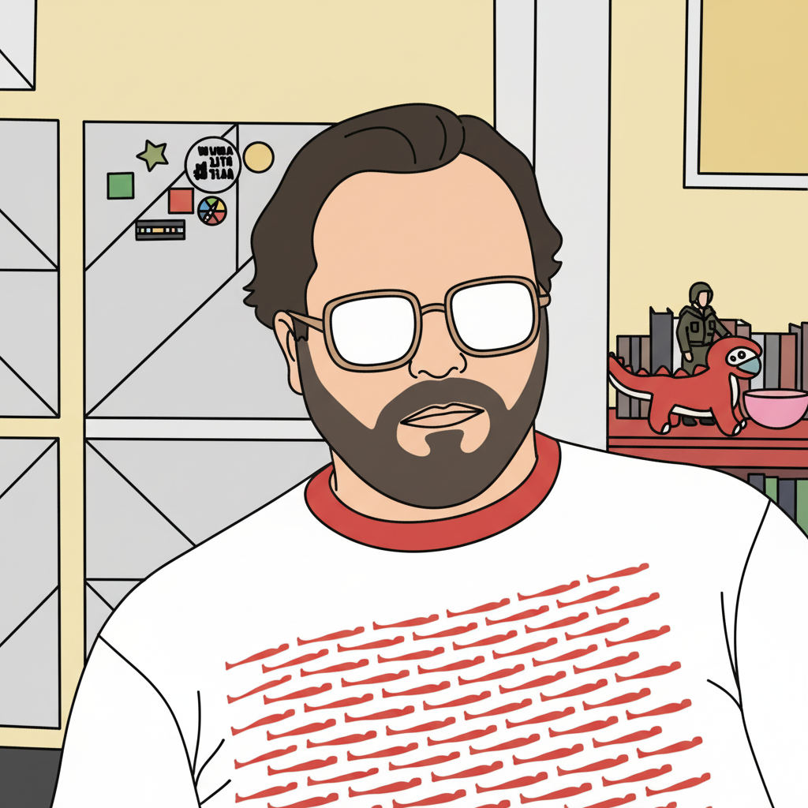

ABOUT
The human behind the terminal.

Joe Amditis
Associate Director of Operations
Center for Cooperative Media · Montclair State University
I build tools for journalists and developers. By day, I coordinate collaborative reporting projects and create AI resources for newsrooms at the Center for Cooperative Media. By night, I write code that makes voice interaction with terminals useful.
I'm a veteran of the NJ Army National Guard (deployed to Iraq in 2008), a former podcast host (WTF Just Happened Today), and co-founder of Muckgers, an investigative news outlet. I teach multimedia production at Montclair State.
CREDENTIALS
OTHER PROJECTS
Yap
Voice-coding tool for Windows. The spiritual predecessor to AudioBash.
Claude Skills for Journalism
Claude Code skills for verification, FOIA requests, and media workflows.
AI Tools for Newsrooms
Guides and resources for integrating AI into local journalism.
Prompt Engineering for Journalists
Five-week course from chat interfaces to CLI tools.
PocketLink
Browser extension for quick shortlink creation.
WHY AUDIOBASH?
I built AudioBash because I got tired of switching between windows to talk to Claude Code. The existing voice coding tools were either too slow, too clunky, or required too much setup.
The goal was simple: speak naturally, see your words appear in the terminal instantly, and control everything from your couch if you want. No manual copy-pasting, no waiting for uploads, no friction.
It started as a personal tool, but it turns out other developers wanted the same thing. So here we are.